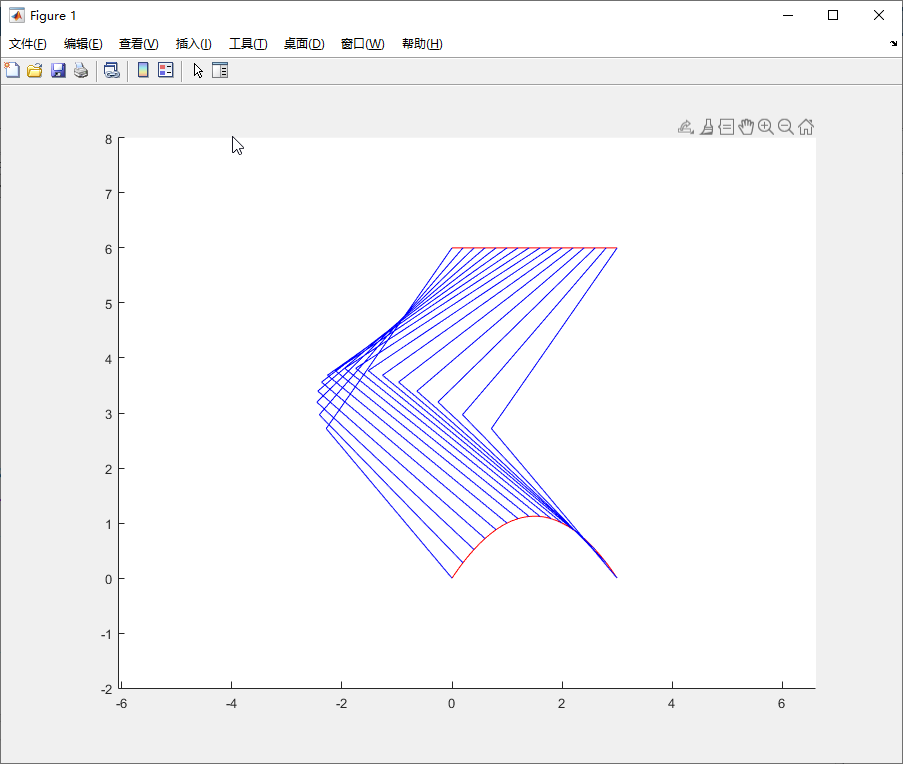

<!DOCTYPE lake>
<p data-lake-id="uda9b50f2" id="uda9b50f2"><span class="lake-fontsize-12" data-lake-id="u13590764" id="u13590764" style="color: rgb(51, 51, 51)">摆动曲线就是狗腿的运动轨迹</span></p><p data-lake-id="u37e4bc0a" id="u37e4bc0a"></p><p data-lake-id="uf779efe7" id="uf779efe7"><a data-lake-id="u706e4007" href="https://zhuanlan.zhihu.com/p/69869440" id="u706e4007" rel="noopener noreferrer" target="_blank"><span data-lake-id="u45775c8a" id="u45775c8a">https://zhuanlan.zhihu.com/p/69869440</span></a></p><p data-lake-id="u8bfce281" id="u8bfce281"><br/></p>